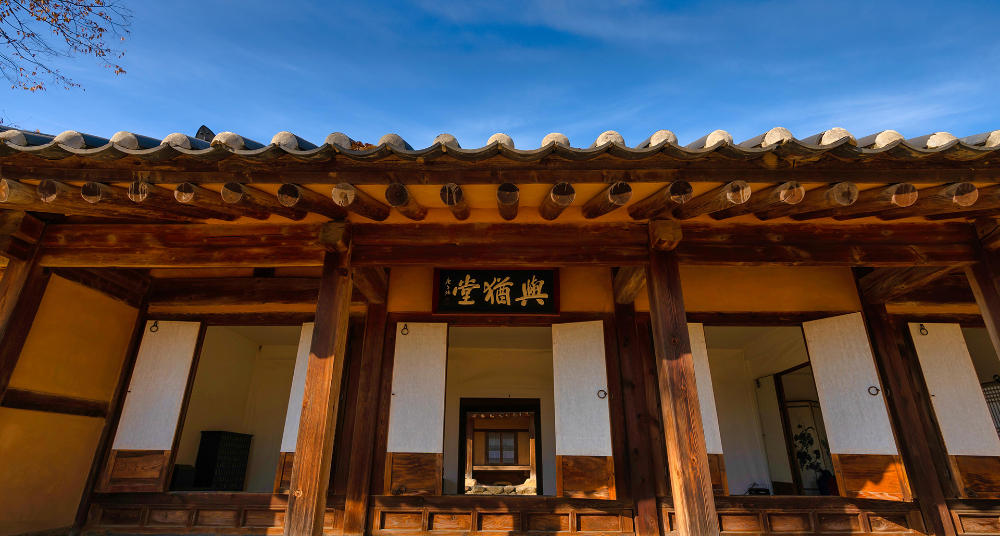
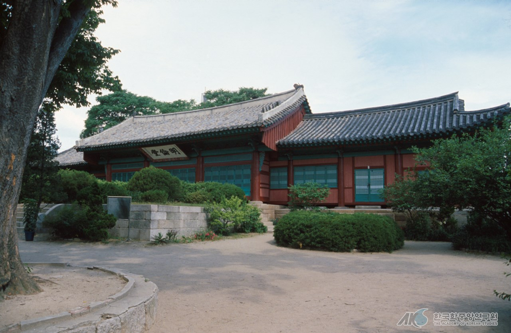
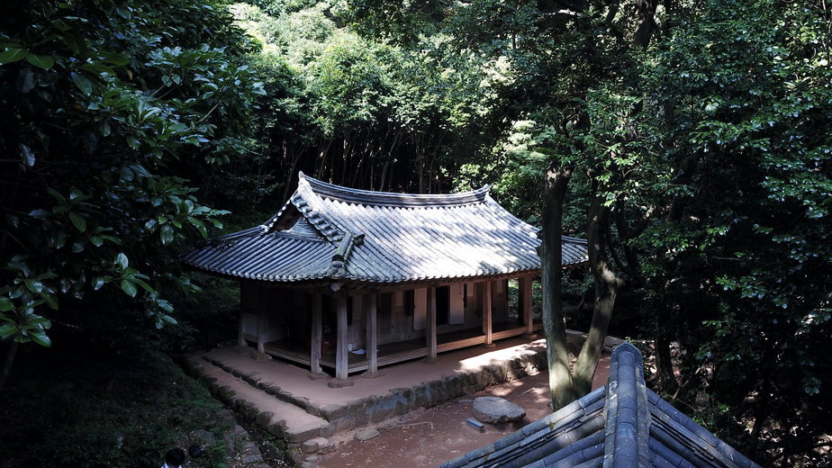
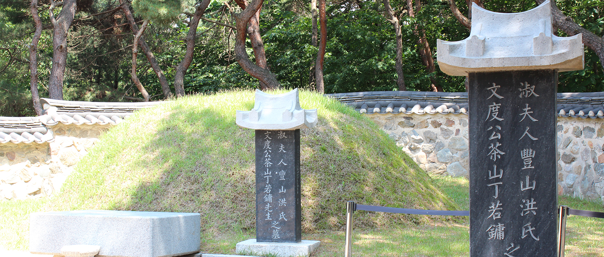
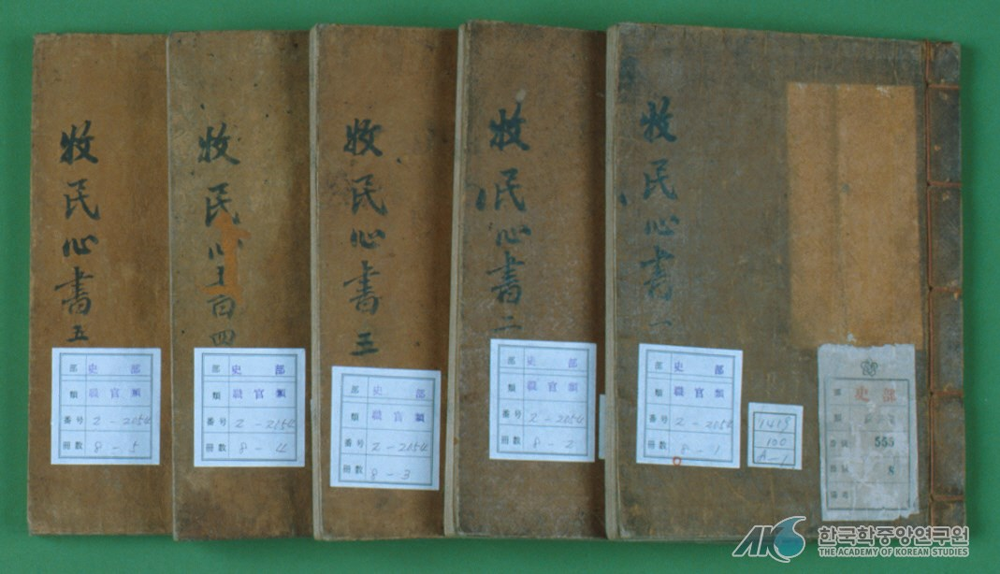
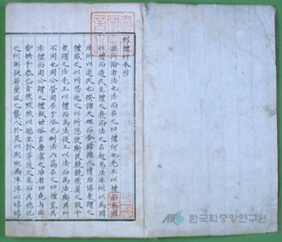
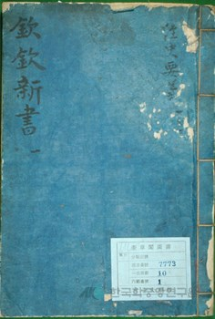
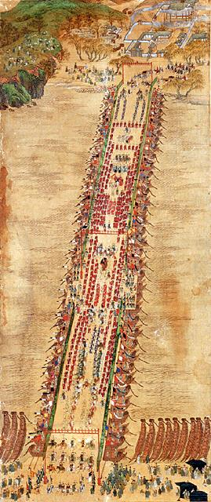
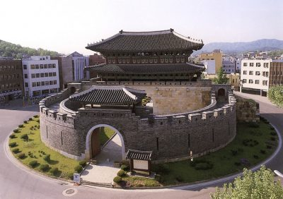
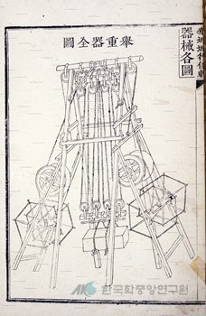

|  <정약용 생가> |
그는 진주목사(晋州牧使)를 역임했던 정재원(丁載遠)과 해남윤씨 사이에서 4남 2녀 중 4남으로 태어났다. 출생 이후 과거를 준비하며 지내던 22세까지 그는 부친의 임지인 전라도 화순, 경상도 예천 및 진주 등지로 따라다니며 부친으로부터 경사(經史)를 배우면서 과거시험을 준비하였다. 그리고 16세가 되던 1776년에는 이익의 학문을 접할 수 있었다. 때마침 이 때 부친의 벼슬살이 덕택에 서울에서 살게 되어, 문학으로 세상에 이름을 떨치던 이가환(李家煥)과 학문의 정도가 상당하던 매부 이승훈(李承薰)이 모두 이익의 학문을 계승한 것을 알게 되었고, 그리하여 그도 그 이익의 유서를 공부하게 되었다. 이익은 근기학파의 중심적 인물이었던 것이다. 정약용이 어린시절부터 근기학파의 개혁이론에 접했다고 하는 것은 청장년기에 그의 사상이 성숙되어 나가는 데 적지 않은 의미를 던져주는 사건이었다. 그리고 정약용 자신이 훗날 이 근기학파의 실학적 이론을 완성한 인물로 평가받게 된 단초가 바로 이 시기에 마련되고 있었다. |
|  <성균관> |
1783년 그가 진사시(進士試)에 합격한 뒤 서울의 성균관 등에서 수학하며 자신의 학문적 깊이를 더하였다. 이 때 『대학(大學)』과 『중용(中庸)』 등의 경전도 집중적으로 연구하였다. 그리고 1789년에는 마침내 식년문과(式年文科) 갑과(甲科)에 급제하여 희릉직장(禧陵直長)을 시작으로 벼슬길에 오른다. 이후 10년 동안 정조의 특별한 총애 속에서 예문관검열(藝文館檢閱), 사간원정언(司諫院正言), 사헌부지평(司憲府持平), 홍문관수찬(弘文館修撰), 경기암행어사(京畿暗行御史), 사간원사간(司諫院司諫), 동부승지(同副承旨) · 좌부승지(左副承旨), 곡산부사(谷山府使), 병조참지(兵曹參知), 부호군(副護軍), 형조참의(刑曹參議) 등을 두루 역임했다. 특히, 1789년에는 한강에 배다리［舟橋］를 준공시키고, 1793년에는 수원성을 설계하는 등 기술적 업적을 남기기도 하였다. |
|  <다산 초당> |
그는 이벽(李檗) · 이승훈 등과의 접촉을 통해 천주교에 관심을 가지게 되었다. 하지만 천주교 신자였는지에 대해서는 논란이 있다. 정약용은 천주교를 서학으로 인식하고 학문적 관심을 가졌을 뿐 그의 다른 형제들과는 달리 교회 내에서 뚜렷한 활동을 전개하지는 않았다. 그러나 정약용의 천주교에 대한 태도는 자신의 정치적 진로에 커다란 장애로 작용하였다. 당시 천주교 신앙은 성리학적 가치체계에 대한 본격적인 도전으로 인식되어 집권층으로부터 격렬한 비판을 받고 있었기 때문이다. 그의 천주교 신앙 여부가 공식적으로 문제시된 것은 1791년의 일이다. 이후 그는 천주교 신앙과 관련된 혐의로 여러 차례 시달림을 당해야 했고, 이 때마다 자신이 천주교와 무관함을 변호하였다. 그러나 그는 1801년의 천주교 교난 때 유배를 당함으로써 중앙의 정계와 결별하게 되었다. 그는 교난이 발발한 직후 경상도 포항 부근에 있는 장기로 유배되었다. 그러나 그는 곧 이어 발생한 ‘황사영백서사건(黃嗣永帛書事件)’의 여파로 다시 문초를 받고 전라도 강진(康津)에서 유배생활을 하게 되었다. 그는 이 강진 유배기간 동안 학문 연구에 매진했고, 이를 자신의 실학적 학문을 완성시킬 수 있는 기회로 활용하였다. 그의 강진 유배기는 관료로서는 확실히 암흑기였지만, 학자로서는 매우 알찬 수확기였다고 할 수 있다. 또한, 그는 조선왕조의 사회현실을 반성하고 이에 대한 개혁안을 정리하였다. 그의 개혁안은 『경세유표』 · 『흠흠신서』 · 『목민심서』의 일표이서를 통해 제시되고 있다. 이들 저서는 유학의 경전인 육경사서에 대한 연구와 사회개혁안을 정리한 것으로 가장 주목받고 있다. 정약용 자신의 기록에 의하면 그의 저서는 연구서들을 비롯해 경집에 해당하는 것이 232권, 문집이 260여 권에 이른다고 한다. 그 대부분이 유배기에 쓰여졌다. |
|  <정약용 묘> |
정약용은 1818년 57세 되던 해에 유배에서 풀려나 1836년에 생을 마감하였다. 그는 이 시기에 향리에 은거하면서 『상서(尙書)』 등을 연구했으며, 강진에서 마치지 못했던 저술작업을 계속해서 추진하였다. 매씨서평(梅氏書平)의 개정 · 증보작업이나 아언각비(雅言覺非), 사대고례산보(事大考例刪補) 등이 이 때 만들어졌다. 그는 또한 자신의 회갑을 맞아 자서전적 기록인 「자찬묘지명(自撰墓誌銘)」을 저술하였다. 그 밖에도 조선학 운동의 목적에서 외현손 김성진이 편집하고 정인보·안재홍이 교열에 참가하여 1934~1938년에 신조선사에서 간행한 154권 76책의 『여유당전서(與猶堂全書)』도 있다. 그는 전 생애를 통해 위기에 처한 조선왕조의 현실을 개혁하고자 했으며, 그 현실 개혁의 이론적 근거를 확보하기 위해 선진유학을 비롯한 여러 사상에 대한 연구를 게을리 하지 않았다. 그가 유배과정에서 불교와 접촉했고, 유배에서 풀려난 후에는 다시 서학에 접근했다는 기록도 이와 같은 부단한 탐구정신의 일단을 보여주는 사례로 보인다. 그는 학문 연구와 당시 사회에 대한 성찰을 통해서 실학사상을 집대성했던 조선 후기 사회의 대표적 지성이었다. |
|  | 『목민심서(牧民心書)』는 수령이 지방 통치를 할 때 필요한 도덕적 규율, 행정 지침·방안 및 통치 이념을 다룬 책이다. 48권 16책으로 된 필사본이다. 정약용은 다양한 서적과 경험을 토대로 『목민심서』를 작성하였다. 12편 72조로 구성되어 있으며 수령이 수행해야 할 주요 항목을 『경국대전』 같이 육전의 형태로 구성하였다. 정약용은 향촌 사회에서 작동하고 있던 전례를 존중하면서도 조선의 국법을 중시하였고 자신의 개혁안을 조율하여 수령이 지방에서 시행해야 할 지침과 통치 기술을 완비하였다. |
|  | 경세유표는 조선후기 실학자 정약용이 행정기구의 개편을 비롯한 관제 · 토지제도 · 부세제도 등 모든 제도의 개혁원리를 제시하여 1817년에 저술한 정책서이다. 44권 15책. 필사본이며 미완성작이다. 유배 중에 전라남도 강진에서 저술하였다. 앞머리에 ＜방례초본인 邦禮草本引＞을 붙여 저술 의도를 밝히면서 “터럭만큼도 병통이 아닌 것이 없는바 지금이라도 고치지 않으면 반드시 나라가 망할 것이다.”라고 하여 근본적인 개혁을 통해서만 국가와 사회가 유지될 수 있음을 강조하였다. 이 책은 그러한 개혁 원리를 제시한 것으로, ≪주례≫의 이념을 근거로 하면서 당시 조선의 현실에 맞도록 조정하여 정치·사회·경제제도를 개혁하고 부국강병을 이루는 데 목표를 두고 있다. |
|  | 흠흠신서는 형사사건의 조사 · 심리 · 처형 과정을 다루는 관리들을 계몽하기 위해 1822년에 편찬한 법제서. 형법서이다. 30권 10책. 508권의 정약용 저서 가운데 『경세유표(經世遺表)』·『목민심서』와 함께 1표(表) 2서(書)라고 일컬어지는 대표적 저서이다. 정약용은 살인 사건의 조사·심리·처형 과정이 매우 형식적이고 무성의하게 진행되는 것은 사건을 다루는 관료 사대부들이 율문(律文)에 밝지 못하고 사실을 올바르게 판단하는 기술이 미약하기 때문이라고 여겼다. 이에 따라 생명존중 사상이 무디어져가는 것을 개탄하였다. 이를 바로잡고 계몽할 필요성을 느껴 책의 집필에 착수한 것이고, 1819년(순조 19)에 완성 1822년에 편찬되었다. 이 책은 한국법제사상 최초의 율학 연구서이며, 동시에 살인사건을 심리하는데 필요한 실무 지침서라 할 수 있다. 그리고 법의학·사실인정학(事實認定學)·법해석학을 포괄하는 일종의 종합재판학적 저술이라고 할 수 있다. |
|  한강주교환어도 |
한강은 군사적 최후 방어선으로 사용되어 고정적인 다리를 설치하지 않았다. 대신 왕의 행차 등과 같은 중요한 행사 시에는 배다리를 설치하여 일시적으로 한강을 건널 수 있도록 하였다. 그러나 이런 배다리는 주변 어민들의 배를 거두어들여 제작되는 다리로 이로 인해 배 100척가량이 생업을 이어나가지 못했으며 제작 기간 또한 오래 걸리는 일이었다. 이 문제를 해결하기 위해 정조는 자신의 행차 배다리 건설에 체계적인 규칙을 세우기로 하였으며 이를 정약용이 담당하게 되었다. 배다리 건설 위치는 한강 중 물살이 약하고 강폭이 좁은 노량-용산 지역을 건너는 위치로 선정되었다. 또한 이에 동원되는 민간 선박에게는 세곡, 소금 운반등의 이권을 제공하여 백성의 자발적 참여를 가능하게 했다. 또한 배의 넓이, 높이, 강폭을 미리 측정하여 최소로 필요한 배의 수를 파악하였으며 동원된 배는 맞물리도록 교차 배치해 물에 대한 저항력을 높여 안정성을 높였다. 그 결과 기존의 배다리에는 수백 척이 동원된 것과는 달리 단 36척의 배만이 동원되었으며 예상 시간보다 20일 이른 11일 만에 제작되었다. |
|  수원화성 팔달문 |
정조는 수원화성을 축성하기로 결정하고 1792년 말 정약용에게 축성에 대한 계책을 작성하라는 명을 내렸다. 젊은 문관에 불과한 그에게 한양도성에 버금가는 성곽 축성 계획을 맡긴 것은 실로 파격적인 조치였다. 이에 정약용은 8가지 축성 방략인 「성설(城說)」을 지어 올렸는데 그 내용은 수원화성의 규모인 푼수(分數, 성의 규모), 재료(材料, 축성재료), 호참(濠塹, 내탁식의 축성법과 해자), 축기(築基, 기초공사), 벌석(伐石, 채석 중 표준화), 치도(治道, 석재 운반을 위한 길닦기), 조거(造車, 석재 운반에 사용될 유형거), 성제(城制, 규자형 성곽 쌓기) 등 이었다. 물론 이 계획 그대로 축성되지는 않았으나 대부분이 적용되었다. 또한 정조는 정약용에게 청나라에서 들여온 『고금도서집성(古今圖書集成)』 중 하나인 『기기도설(器機圖說)』을 하사하였고 이를 연구한 정약용은 수원화성 축성의 구체적인 계획을 보고하였다. 『기기도설』은 서양의 과학문명을 소개하는 내용을 중국어로 번역한 책이며 저자는 예수회 소속 신부였다가 명나라에 귀화한 요하네스 테렌츠(J. Terrenz,중국 이름 鄧玉函)이다. 책 후반부에는 도르래의 원래를 이용한 실용적인 기계장치의 해설이 실려 있어 17세기 서구의 과학기술을 엿볼 수 있다. 정약용은 이 책을 참고하고 직접 새롭게 고안하여 석재를 수레에 싣는 거중기(擧重機)와 석재 운반에 유용한 유형거(遊衡車)를 발명하였다. 축성 실무자들은 이러한 새로운 도구의 발명과 기존 도구들의 활용으로 축성에 기여하였다. |
|  화성성역의궤 |
조선시대 정조 때에 수원성곽을 쌓는 데 사용되었으며, 정약용(丁若鏞)의 ≪기중도설 起重圖說≫에는 그림과 함께 설명되어 있는데 도르래를 이용하여 물체를 들어올리게끔 되어 있다. 1627년 야소회(耶蘇會) 선교사인 테렌츠(Terrenz, J., 鄧玉函)의 ≪기기도설 奇器圖說≫과 명나라의 왕징(王徵)이 저술한 ≪제기도설 諸器圖說≫에 영향을 받아 제작된 것으로 생각된다. 조선 후기 실학파의 이용후생적(利用厚生的)인 학풍을 단적으로 알려주는 예로서 주목된다. |